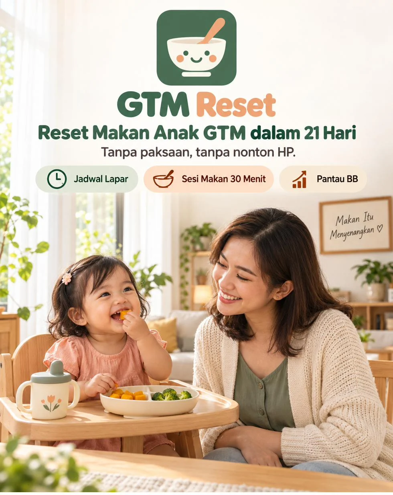
GTM Reset 21 Hari adalah aplikasi yang menyusun jadwal lapar dari jam bangun si kecil, nemenin tiap sesi makan 30 menit, dan menunjukkan di grafik apakah suapan dan BB-nya bergerak.
Sekali bayar. Akses selamanya. Buka dari HP atau laptop, tanpa install.
“Aaa... ayo mangap, Sayang.”
Suapan kelima udah diemut sepuluh menit. Kamu udah nyanyi, udah pura-pura jadi pesawat, udah keliling depan rumah sambil gendong. Piringnya masih setengah, nasinya udah dingin. Dan kamu mulai kesal sama diri sendiri, karena kesal sama anak umur setahun.
“Nonton dulu, baru mangap.”
Satu-satunya cara dia mau makan: HP disandarkan ke botol minum, video yang sama diputar ulang. Begitu layarnya kamu ambil, mulutnya langsung mingkem dan tangisnya pecah. Kamu tahu ini gak baik. Tapi kalau HP-nya dicabut, dia gak makan sama sekali.
“Kejar BB ya, Bu.”
Pulang posyandu, bukunya kamu tutup cepat-cepat. Garisnya naik irit lagi. Di rumah, eyang nanya hari ini masak apa, dengan nada yang bikin kamu pengin masuk kamar. Menu udah diganti, vitamin udah dibeli, madu udah dicoba. Anaknya tetap mingkem.
Tiga adegan ini kelihatan beda. Akarnya satu. Dan bukan karena masakanmu kurang enak, atau kamu kurang sabar.
Kebanyakan anak GTM bukan gak doyan makanannya. Dia datang ke meja makan dalam keadaan belum lapar. Susu diminum sejam sebelumnya, camilan dikasih waktu rewel, dan jam makan maju mundur ngikutin jam bangunnya. Perutnya gak pernah benar-benar kosong, jadi mulutnya ikut tutup.
Lalu dia dibujuk. Disuapi sambil nonton, digendong keliling, ditambah suapan waktu mulutnya masih penuh. Pelan-pelan, makan jadi urusan orang dewasa, bukan urusan dia.
Aturan makan anak (feeding rules) yang dipakai dokter anak sebenarnya sederhana: makan saat lapar, maksimal 30 menit, tanpa distraksi, dan semua orang di rumah pakai cara yang sama. Kuncinya konsisten, bukan sehari dua hari.
Jujur dulu: aturannya bukan rahasia. Kamu bisa baca gratis di mana-mana. Yang susah itu menjalankannya tiga kali sehari, dengan jam bangun yang beda tiap hari, sementara eyang punya cara sendiri.
Itu yang dikerjakan Sistem Jadwal Lapar:
Jam makan disusun dari jam bangun anak hari itu, dengan jeda susu dan camilan yang dijaga.
Ada timer, persiapan, dan kalimat siap ucap. Waktu habis, piring diangkat tanpa marah.
7 level, turun pelan ngikutin sesi yang berhasil. Bukan dicabut sekaligus.
Mode Pengasuh untuk eyang atau ART, dengan aturan yang sama.
Berhenti ganti menu. Mulai atur jadwal laparnya.
Tanpa paksaan, tanpa nonton HP.
Nama, tanggal lahir, BB terakhir, jam bangun dan tidur siang, ASI atau susunya, dan kebiasaan makannya sekarang. Hasilnya 2 titik awal fokus: penyebab GTM yang paling mungkin di rumahmu, dan langkah pertama minggu ini.
Jadwal makan utama, camilan, dan jam susu hari itu langsung jadi, lengkap dengan hitung mundur ke sesi berikutnya.
Aplikasi nemenin 30 menit. Selesai, catat hasilnya dengan dua ketukan.
Jadwal lapar
Tiap pagi cukup isi jam bangunnya. Jadwal makan, camilan, dan jam susu hari itu langsung jadi, lengkap dengan hitung mundur ke sesi berikutnya.
Tidur siangnya molor atau minum susu di luar jadwal? Jadwalnya menyesuaikan sendiri.
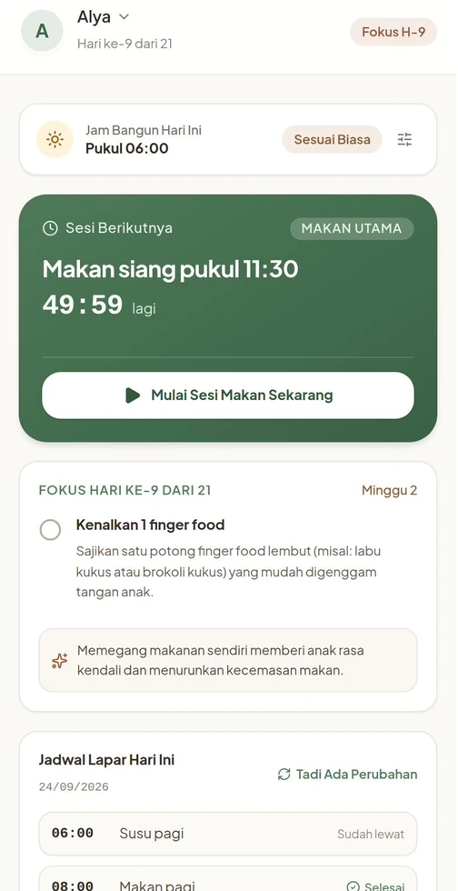
Ketuk gambar untuk memperbesar.
Sesi makan 30 menit
Timer 30 menit berjalan dengan satu pegangan di layar: tawarkan, jangan paksa.
“Tugas Bunda menyediakan. Tugas anak memutuskan berapa banyak.”
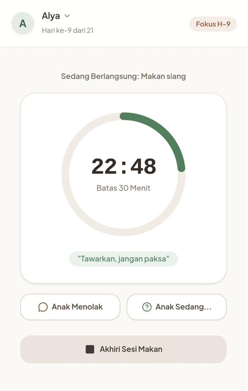
Saat anak menolak
Tekan Anak Menolak, pilih yang terjadi, dan kalimat yang tepat langsung muncul. Lengkap dengan satu hal yang jangan dilakukan saat itu.
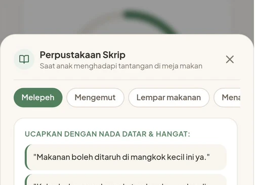
Kalimat lengkap untuk tiap situasi ada di dalam aplikasi.
Pantau kemajuan
Dua ketukan tiap selesai makan. Suapan harian dan BB mingguannya tercatat di grafik, dibandingkan dengan kurva WHO.
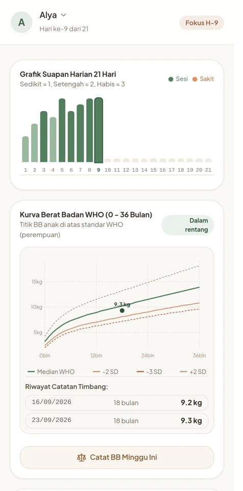
Ketuk gambar untuk memperbesar.
Satu rumah satu suara
Mode Pengasuh cuma berisi jadwal berikutnya, 4 aturan rumah, dan satu tombol mulai. Pengaturannya dikunci PIN.
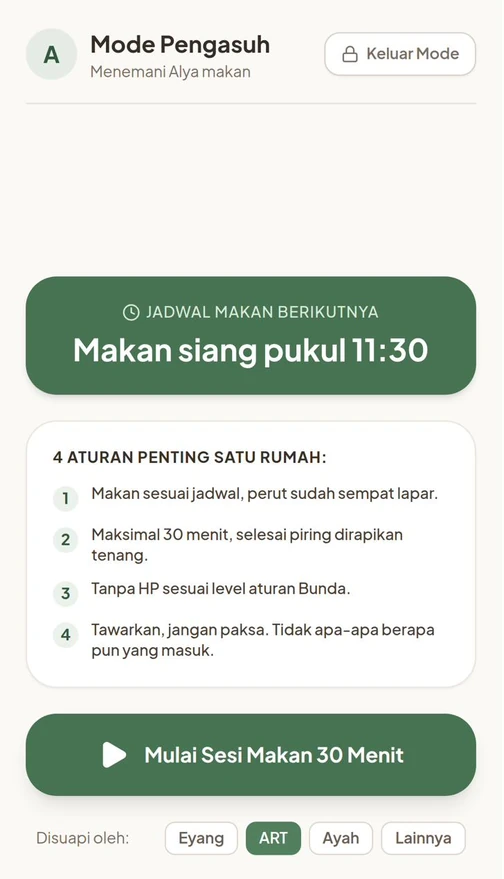
Rapor 21 Hari
Rapor 21 Hari membandingkan minggu pertama dengan minggu ketiga: suapan, durasi makan, sesi tanpa HP, dan BB.
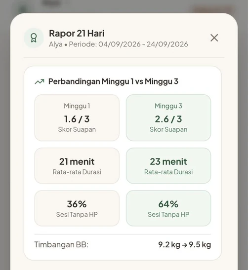
Jam makan ditata dari jam bangun, dan layar HP mulai diturunkan.
Pelan-pelan naik tekstur, kenalan sama finger food.
Semua yang nyuapin pakai cara yang sama, dan kamu makin banyak mengamati.
Tujuannya satu: jam makan balik jadi urusan lapar dan kenyangnya anak, bukan urusan bujukanmu.
Ritme tiap anak beda. Yang menentukan bukan menu apa yang kamu masak, tapi seberapa konsisten jadwal laparnya dijaga.
Segera periksakan ke dokter anak kalau GTM sudah lebih dari sebulan, BB turun, anak sering tersedak saat makan, atau air liurnya berlebihan.
| Ganti menu & vitamin | Ebook / kelas video | GTM Reset 21 Hari | |
|---|---|---|---|
| Saat jam makan tiba | Tetap nebak dia lapar atau belum | Ingat-ingat teorinya | Jadwal dari jam bangunnya, ada hitung mundur |
| Bangun kesiangan | Tidak dibahas | Hitung ulang sendiri | Jadwal geser otomatis |
| Melepeh atau mengemut | Ganti menu lagi | Cari halamannya dulu | Satu ketuk, kalimat siap ucap |
| Lepas HP | Dicabut, anak nangis | "Kurangi pelan-pelan" | 7 level, naik saat sesi berhasil |
| Eyang yang nyuapin | Caranya beda sendiri | Harus dijelaskan ulang | Mode Pengasuh ber-PIN |
| Habis sakit | Mulai dari nol | Tidak dibahas | Mode Reset Ulang 3 hari |
| Pantau BB | Tunggu posyandu bulan depan | Pakai ingatan | Grafik suapan dan kurva BB WHO |
| Cara bayar | Beli lagi tiap habis | Akses dibatasi | Sekali bayar, selamanya |
Geser tabel ke samping untuk melihat semua kolom.
Geser untuk melihat cerita lainnya. Nomor disensor untuk menjaga privasi.
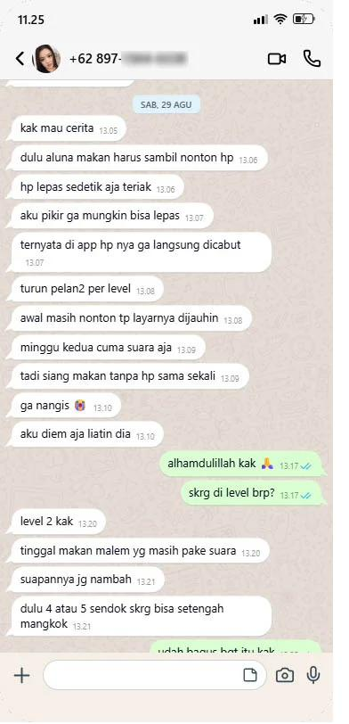
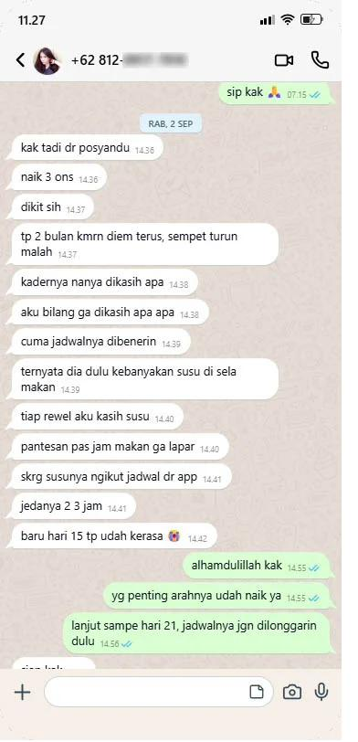
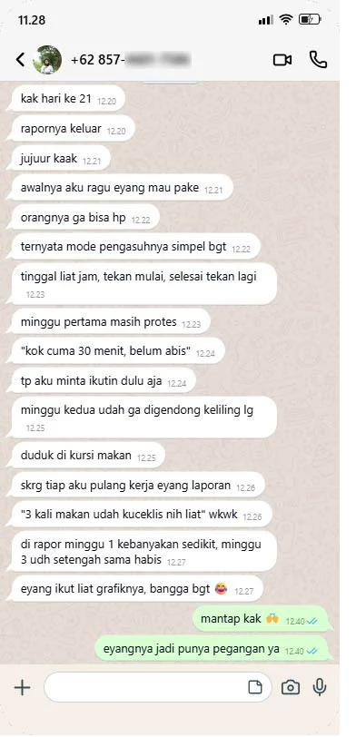
Sekitar Rp2.000 per sesi makan.21 hari dikali 3 makan utama. Kelas makan anak sejenis biasanya dijual Rp300 ribuan dengan akses 12 bulan. Di sini sekali bayar dan aksesnya selamanya, jadi kalau adiknya nanti mulai MPASI, programnya bisa kamu jalankan lagi.
Panduan Akses berisi kode masuk dikirim ke email yang kamu pakai saat order.
Rp127.000 adalah harga perkenalan batch awal. Harga akan naik seiring penambahan fitur.
Bisa pakai QRIS, transfer bank, atau e-wallet.
Begitu pembayaran terkonfirmasi, kamu diarahkan ke halaman sukses GTM Reset 21 Hari, dan Panduan Akses berisi kode masuk dikirim ke email kamu. Kalau belum ada di kotak masuk, cek folder Spam atau Promosi.
Buka gtmresetanak.ai.studio, masukkan kode akses dari email, lalu isi kuis sekitar 3 menit. Jadwal lapar hari pertama langsung jadi.
Tanpa bikin akun. Tanpa password.
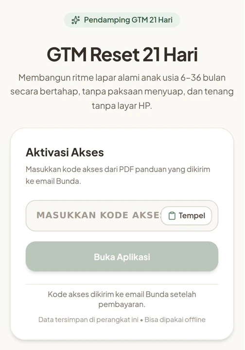
Kamu bisa menjalaninya dengan cara yang sama: bujuk, gendong keliling, HP disandarkan ke botol minum. Atau kamu bisa tahu jam berapa dia benar-benar lapar, apa yang diucapkan waktu dia melepeh, dan kapan sesinya selesai tanpa ada yang nangis.
Kamu udah ngasih yang terbaik di piringnya. Yang belum pas cuma jadwal laparnya.
Sekali bayar. Akses selamanya. Buka dari HP atau laptop, tanpa install.